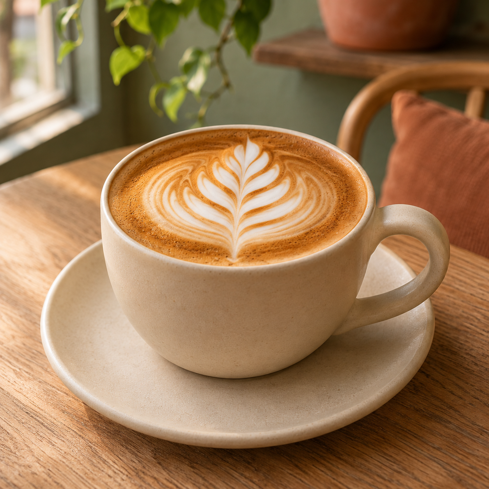

01

A daily ritual, made lovely01 A little about us
A good day
starts somewhere.
Somewhere warm, with the scent of something baking and a cup made just the way you like it.
Juniper & Grain is a neighborhood place for unhurried mornings, familiar faces, and the small comforts that make an ordinary day feel special. Come for a flaky pastry or a thoughtful cup of coffee; stay for a little while.
Come as you are